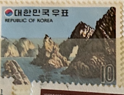
| SOURCE | TITLE| IMAGE MATCH | click to source page |
| 知乎 | 韩国的风景邮票（笔记） - 知乎 | 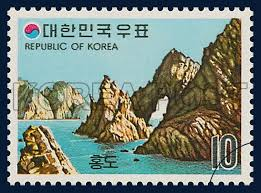 |
| HipStamp | Korea Stamp: 1960-Very OLD Mint & Used 18 Different Stamps #24550-Vf | Asia - South Korea, General Issue Stamp / HipStamp | 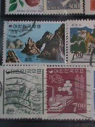 |
| Find Your Stamps Value | Value of island postfrim 4 sk stamps | 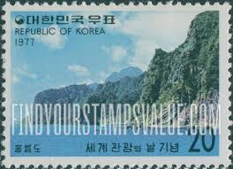 |
| 당근 | 1973년 관광시리즈 우표 (홍도) | 취미/게임/음반 | 당근 중고거래 | 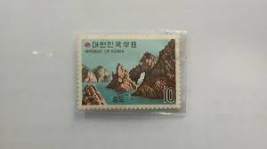 |
| Propagandaworld | Mount Paektu 2000 | Propagandaworld | 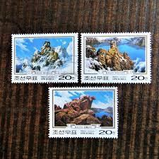 |
| eBay | Japan 1955 - Mihon Overprint - Specimen Overprint (567-568) Mint never Hinged | eBay | 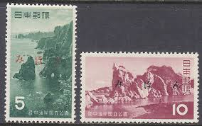 |
| eBay | South korea 2008 Mountain stamp MNH 山| eBay | 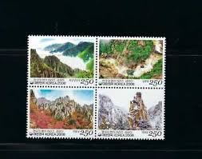 |
| eBay | chinese collection stamp | eBay | 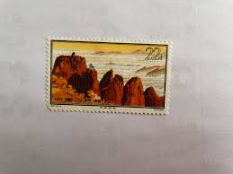 |
| Korea Stamp Society | Tourist Postmarks — Korea Stamp Society | 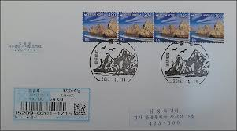 |
| Etsy | China 1963 Stamp: S57 16-14, MNH OG VF - Etsy | 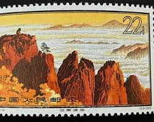 |
| Xabusiness.com | T140 Scott 2225-28 Mountain Hua - China Stamps | 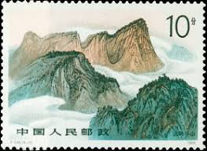 |
| Find Your Stamps Value | Value of SEO do Google(TG:e10838).xog stamps | 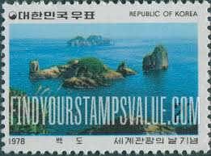 |
| Find Your Stamps Value | Palmi Island and Beach - 팔미도와 해변 10w Multicolored stamp price, value | 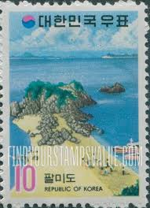 |
| Xabusiness.com | 1997-16 Scott 2805 Huangshan Mountains - China Stamps | 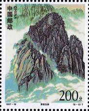 |
| Kiddle - visual search engine for kids | Rikuchū Province Facts for Kids | 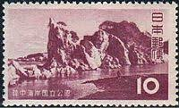 |
| PicClick | CHINA 1995 SANQING Mount National Park Set- 4 Maximum Postcards N585 $5.38 - PicClick | 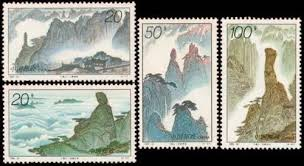 |
| eBay | Korea South 1980 "Mt. Seo-rak" Definitive Stamp | eBay | 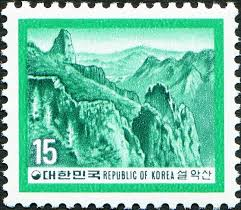 |
| Xabusiness.com | China stamps of mountain | 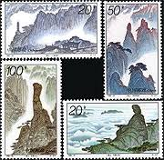 |
| Alamy | South korea postage stamp hi-res stock photography and images - Page 11 - Alamy | 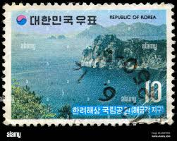 |
| eBay | 1963 S57(16-14) Huangshan Block of four(4) OG F Collectible Stamp China | eBay | 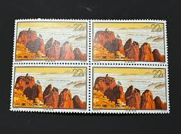 |
| koreasea.net | Stamp & History of Dokdo | 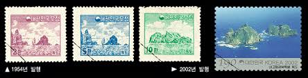 |
| HipStamp | Japan #612-613 set/2 mh - 1955 Rikuchu Kaigan National Park *#613 sml gum bends* | Asia - Japan, General Issue Stamp / HipStamp | 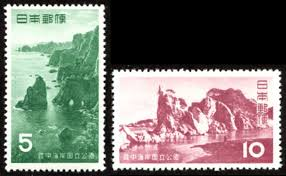 |
| eBay | Korea SC 1104-5 MNH (5gum) | eBay | 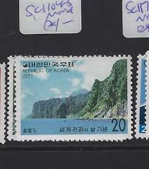 |
| Find Your Stamps Value | Russia: Signs of the Zodiac – World Stamp News | 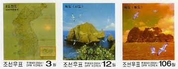 |
| Free stamp catalogue | Stamps from Korea, North - Freestampcatalogue.com - The free online stampcatalogue with over 500.000 stamps listed. | 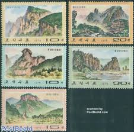 |
| Find Your Stamps Value | Hwang Shan Landscapes (Yellow Mountains), Anhwei Province: “Stone Monkey Watching the Sea” - 黄山风景, 安徽省: 石猴观海22f Multicolored stamp price, value | 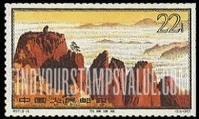 |
| eBay | CHINA PRC Sc#2624-7 1995 95-23 Sanqing Mountains MNH | eBay | 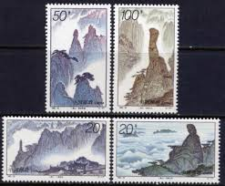 |
| Colnect | Stamp: Mountain Kumgang, North Korea (Korea, North(50th Anniversary of North Korean-China Diplomatic Relations) Mi:KP 4243,Sn:KP 3940,Yt:KP 2915,Sg:KP 3948 📮 | 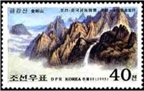 |
| Stamp Community Forum | Do You Collect Stamps Of North Korea - Stamp Community Forum | 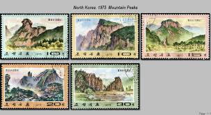 |
| eBay | Korean Postage Stamp Beautiful Korea 9 Places of Scenic Beauty Definitive Stamps | eBay | 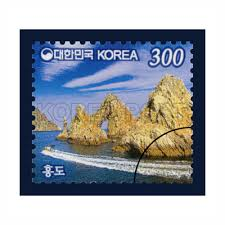 |
| HipStamp | Korea SC# 845-54 FVF/MNH | Asia - South Korea, General Issue Stamp / HipStamp | 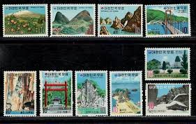 |
| eBay | 705233) Joint Issue, Nature, Mountain, World | eBay | 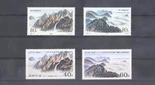 |
| yscoin | L9034, Korea Wonsan Air Festival Stamp Booklet, with Fight Jet, 2015 – yscoin | 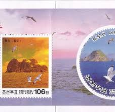 |
| eBay UK | Korean Thematic Postal Stamps for sale | eBay UK | 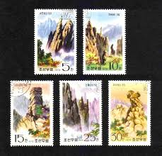 |
| WorthPoint | China, 1963, Hwang Shan Landscapes, Scott #724, 6 Stamps, Used | #1726713321 | 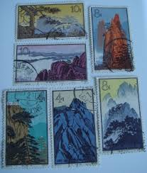 |
| lastdodo.com | Beauties of nature (1980) - South Korea - LastDodo | 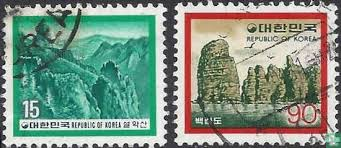 |
| Alamy | Postage stamp from South Korea in the World Tourism Day series issued in 1980 Stock Photo - Alamy | 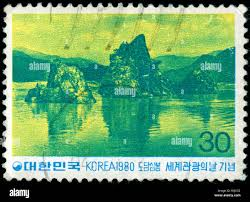 |
| yscoin | Korea – yscoin | 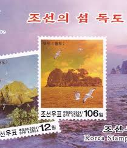 |
| eBay | Nature Japanese Stamps for sale | eBay | 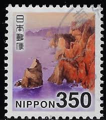 |
| eBay | Korea South 2002 "Hometown Special - Incheon Metropolitan City" Sheet | eBay | 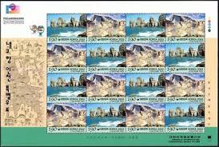 |
| eBay | KOREA - 1980 DEFINITIVES SCOTT#1219-1220 - BLOCK OF 4 - 2V - MINT NH | eBay | 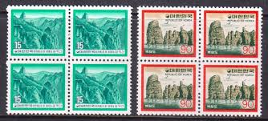 |
| Etsy | Timbre de Chine 1963 : S57 16-14, MNH OG VF - Etsy France | 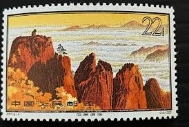 |
| eBay | Korea Postage Stamps Scott 823-824, MNH Complete Set!! K684 | eBay | 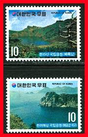 |
| Free stamp catalogue | Stamps from Korea, North with the theme Sport - Freestampcatalogue.com - The free online stampcatalogue with over 500.000 stamps listed. | 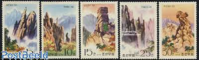 |
| Find Your Stamps Value | Rikuchu-Kaigan National Park: Benten Cape - 陸中海岸国立公園、北山崎 5y Deep green stamp price, value | 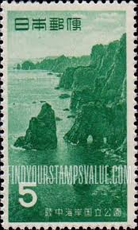 |
| eBay | J001 Korea 1999 art Kumgang Mountain MNH | eBay | 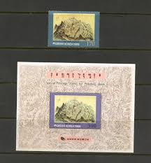 |
| yscoin | L9032, Korea Pyongyang Bridge, Stamp Booklet with 8 pcs, 2000 – yscoin | 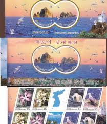 |
| HipStamp | China -Stamps- 1963- S57-Sc# 716-731 Landscapes of Huangshan Mountain-Stamp CTO | Asia - China, General Issue Stamp / HipStamp | 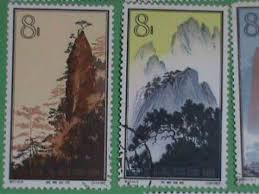 |
| Find Your Stamps Value | Sanqing Mountains: Bodhisattva Enjoys Music - 三清山: 观音赏曲50f Multicolored stamp price, value | 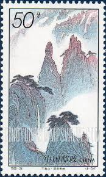 |
| eBay | 1995 China PRC 1995-24 Mount Sanqingshan Mountain - 4 Stamp Set | eBay | |
| 동북아역사재단 | Northeast Asian History Network | |
| HipStamp | 1975- Sc#1407-9-Korea Stamp: Views of MT. Chilbo Mountain Cto-Nh Stamps | Asia - North Korea, General Issue Stamp / HipStamp | |
| eBay | Korea 1999 Art, Paintings MNH Block + stamp | eBay | |
| HipStamp | Korea-Very Old- High Catalog Value-29- Old-Used Stamps Very Fine on Sales | Asia - South Korea, Stamp / HipStamp | |
| eBay | Korea 823-824 MH | eBay | |
| Duke University | books Archives - Preservation Underground | |
| eBay | STAMPS OF JAPAN - NATIONAL PARKS - SCOTT #613a S/S MNH 1955 -WITH PAMPHLET (J30) | eBay | |
| WordPress.com | Stamp North Korea Nature SNKN052 Mount Kumgang 1999 | Propagandaworld Archive | |
| eBay | China 1963 - Used stamp. Mi nr.: 757. With faults............(VG) MV-13161 | eBay |